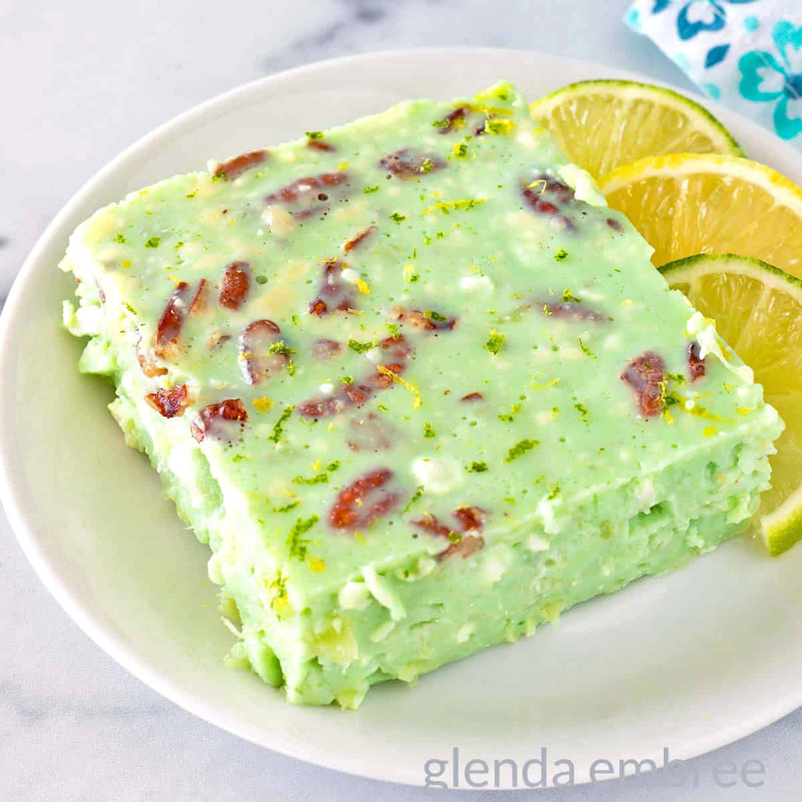

Recipe for Jello Surprise
Home

Description
Jello Surprise is definitely not for everyone, but for those of use who it is for, it's the best!
If I'm being honest, Jello Surprise isn't even the official name for this dish/dessert. I couldn't tell you what it's actually supposed to be called. For all I know it could be forever lost to time. That said, I do know it tastes great!
Ingredients
- Lime Jello
- Greek Yogurt (Could be non-fat, full-fat, sweetened, unsweetened, or really any variation you'd like)
- Cottage Cheese (Any fat percentage you like)
- Crushed Pineapple
- Nuts of any kind
Steps
- Add the required amount of liquid for the Jello to a sauce pan. Make sure to use the juice from the crushed pineapple as part of the liquid.
- Bring liquid to a boil.
- While waiting for the mixture to boil, add the rest of the ingredients to a new bowl.
- Add in Gelatin/Jello.
- Once, the jello has dissolved, add the mixture to the bowl with the rest of the ingredients.
- Mix everything until fully immersed.
- Transfer full mixture to new bowl for setting (if different that mixing bowl).
- Place in fridge to solidify/set for 4 hours minimum or overnight ideally.
- Serve and enjoy!